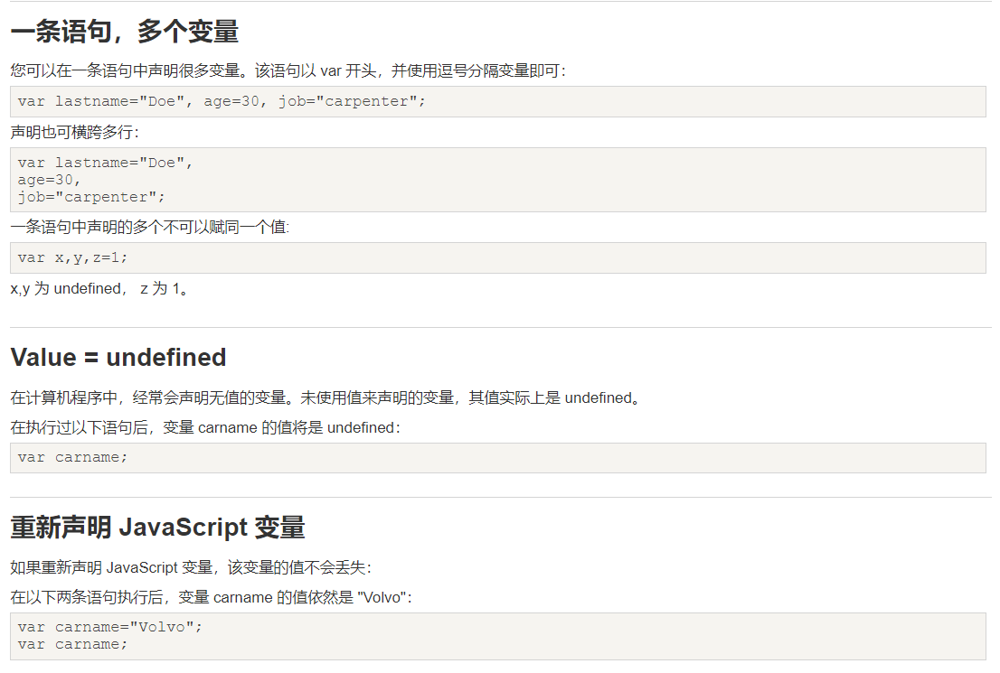
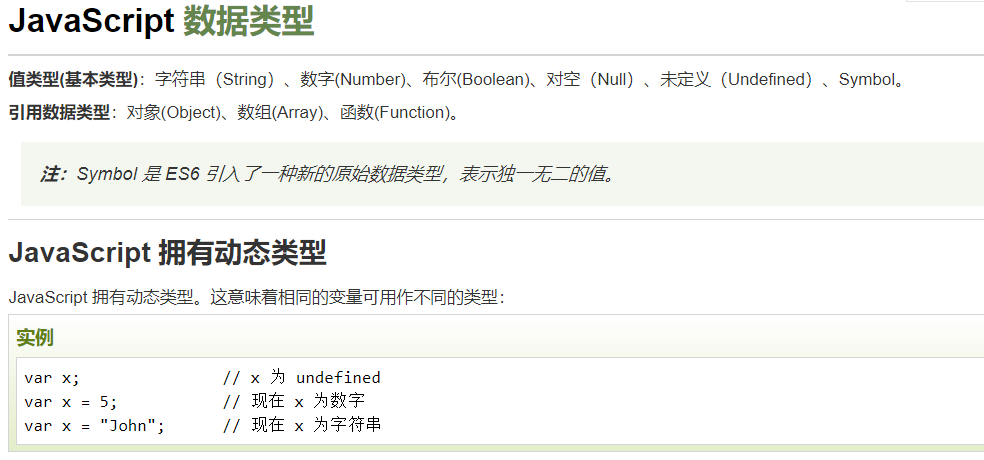

- HTML 中的脚本必须位于 "<"script">" 与 "<"/script">"标签之间。
- 脚本可被放置在 HTML 页面的"<"body">" 和 "<"head">" 部分中。或者同时存在于两个部分中。
- 也可以把脚本保存到外部文件中。外部文件通常包含被多个网页使用的代码。外部 JavaScript 文件的文件扩展名是 .js。
如需使用外部文件，请在 "<"script">"标签的 "src" 属性中设置该 .js 文件。外部 javascript 文件不使用 "<"script">" 标签，直接写 javascript 代码。
- 在标签中填写 onclick 事件调用函数时，不是 onclick=函数名， 而是 onclick=函数名+()
那些老旧的实例可能会在"<"script">" 标签中使用type = "text/javascript"。现在已经不必这样做了。JavaScript是所有现代浏览器以及HTML5中的默认脚本语言。
JavaScript 可以通过不同的方式来输出数据：
- 使用 window.alert() 弹出警告框。
- 使用 document.write() 方法将内容写到 HTML 文档中。
- 使用 innerHTML 写入到 HTML 元素。
- 使用 console.log() 写入到浏览器的控制台。
document.getElementById("demo").innerHTML = "段落已修改。";
说明：document.getElementById("demo") 是使用 id 属性来查找 HTML 元素的 JavaScript 代码 。
innerHTML = "段落已修改。" 是用于修改元素的 HTML 内容(innerHTML)的 JavaScript 代码。
如下可以将JavaScript直接写在HTML 文档中。如下的日期：document.write(Date());
注意：document.write() 仅仅向文档输出写内容。但如果在文档已完成加载后执行 document.write，整个 HTML 页面将被覆盖。如下
JavaScript 是脚本语言。浏览器会在读取代码时，逐行地执行脚本代码。而对于传统编程来说，会在执行前对所有代码进行编译。
JavaScript 语句和 JavaScript 变量都对大小写敏感。

